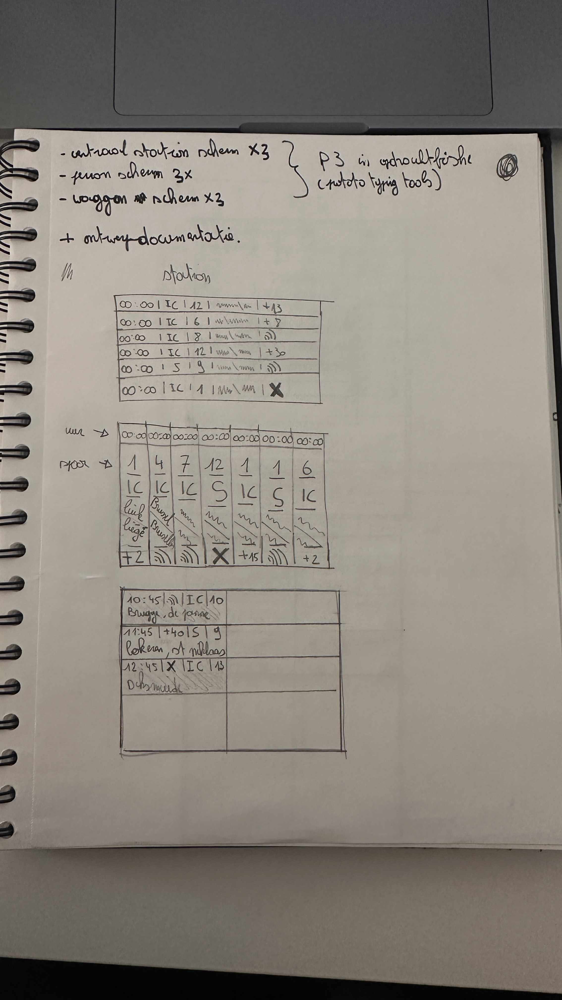

Mijn ervaring week 2.
Chinees
In week 2 heb ik mij vooral gericht op het uitwerken van mijn low-fidelity schetsen voor de treinschermen. Deze fase hielp mij om snel verschillende lay-outs en ideeën te verkennen zonder mij al te hard te focussen op details. Door te schetsen kon ik beter nadenken over de structuur, de functionaliteit en de gebruiksvriendelijkheid van de interface.



.